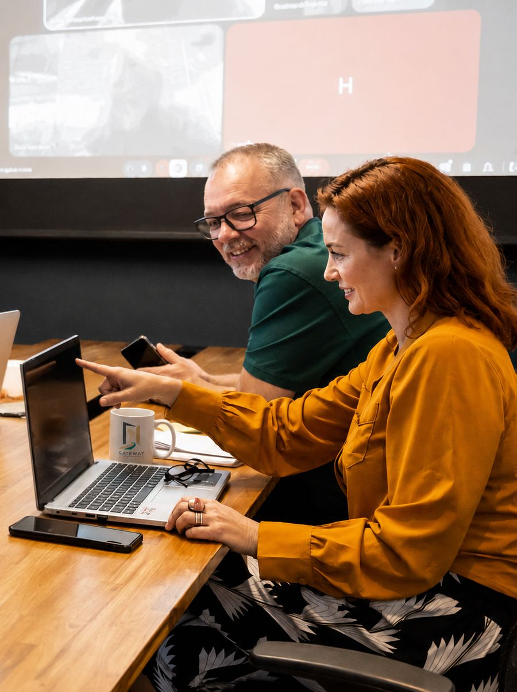
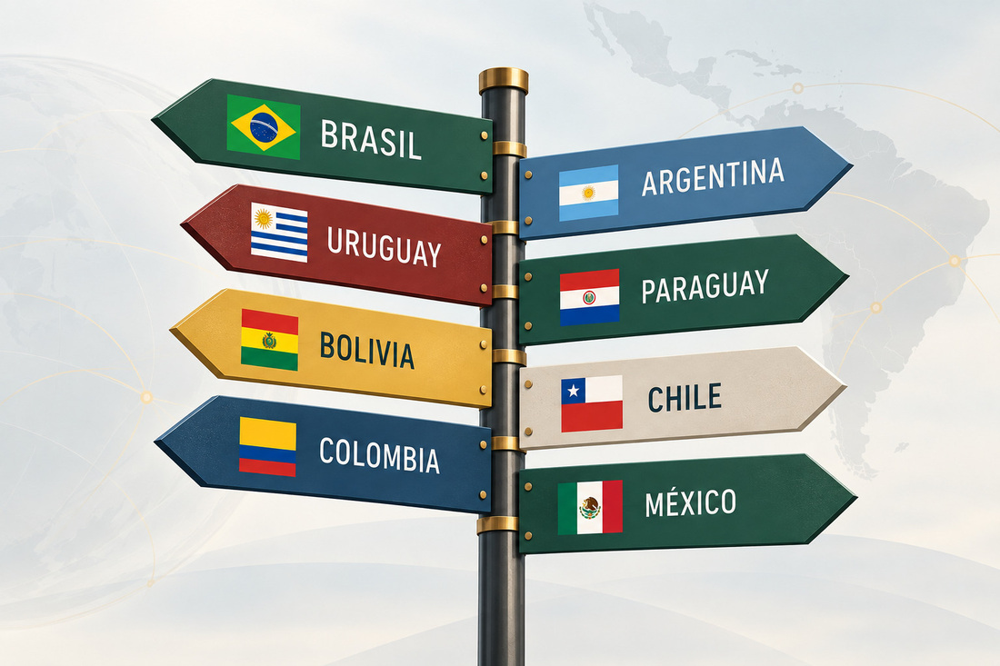
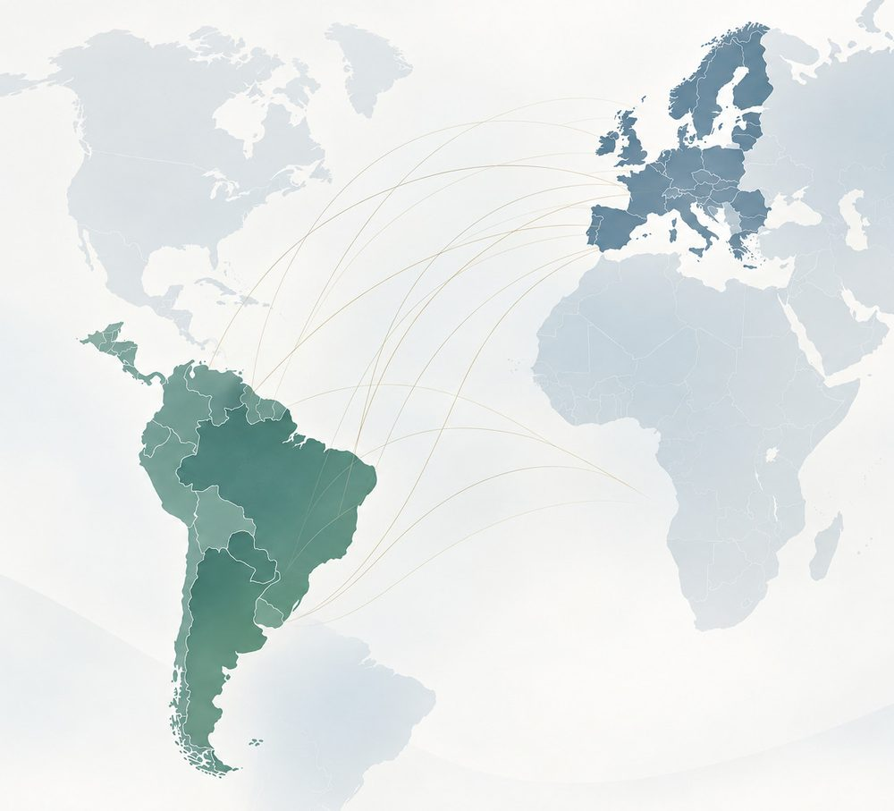
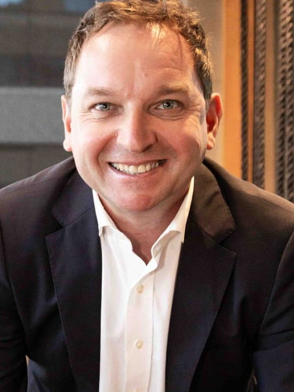
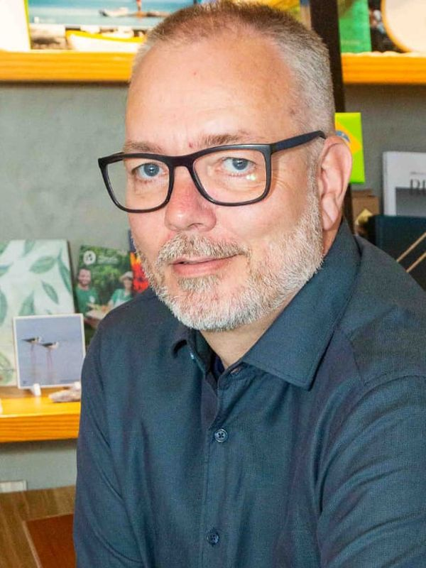
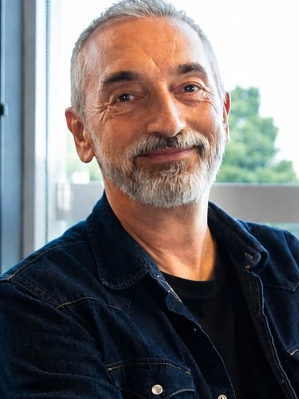

4languages spoken in-house
20+years working across the region
2continents, one team
24htypical reply time
Expanding into a new market takes more than a good business plan. You need to understand the market, the people, the business culture and the way things work locally.
Gateway Mercosur brings together international business experience, market knowledge, digital expertise and cross-cultural communication to help you make informed decisions and move forward with confidence.
We are based in Florianópolis, southern Brazil, and our team's experience extends across Europe and different parts of Latin America. That gives us a perspective that combines where you are coming from with where you want to go.
From the first questions about entering the region to developing your presence once you are here, we can support you with both strategy and practical execution.

Good strategy starts with understanding the market. Making it work takes local experience.
Your needs may start with one area and develop into another. Our services are designed to work together, depending on where you are in your journey.

Understand the opportunity. Plan your way in.
We help you assess markets, identify opportunities and risks, understand the competitive landscape and develop a practical approach to entering or expanding in Latin America.
From market research and entry strategy to partner and distributor searches, we help turn questions into clear next steps.
Learn more →Make sure your business is seen and understood.
Entering a new market also means adapting the way you present your business. We help you build a digital presence that speaks to the right audience and reflects the realities of the local market.
Our support includes digital positioning, SEO and GEO, content strategy, performance marketing and localised brand communication.
Learn more →More than translation. Making communication work.
The right message can look very different from one market to another. We help you adapt your communication, content and brand so that it feels natural and relevant to the people you want to reach.
With German, English, Spanish and Portuguese within our team, we can support multilingual communication while keeping the cultural context in mind.
Learn more →We don't believe in ready-made solutions. We believe in finding what works for your business.
Gateway Mercosur is based in Florianópolis, southern Brazil, with experience that spans Europe and Latin America.
We understand that entering a new market is about more than the numbers. It is also about people, communication, business culture, relationships and knowing how things work locally.
Our European background and Latin American experience allow us to look at your business from both sides – understanding where you are coming from while helping you navigate the market you are entering.

We are based in Brazil and understand the local market, business environment and the realities of working in the region.
We understand the expectations, structures and ways of working that European companies bring with them.
Our team's professional experience extends beyond Brazil, including work and business relationships in different Latin American markets.
We understand that successful communication is about more than language. Business culture, expectations and ways of working matter too.
German, English, Spanish and Brazilian Portuguese are part of our team. You can communicate directly with people who understand both the language and the context.
Business development, marketing, communication, digital strategy and creative expertise come together in one team – so you don't have to coordinate everything separately.
Five people, four working languages and a mix of experience across Europe and Latin America.
We are all based in Florianópolis, southern Brazil, bringing together different backgrounds and perspectives under one roof – from international business and market development to digital strategy, communication, localisation and creative production.

Hugo Hagel
André Desor
Adrian HardyWe work with European companies from a wide range of sectors – from businesses just beginning to explore Latin America to companies that already have a presence in the region and want to grow.
What they have in common is the need for a reliable understanding of the market and practical support in navigating it.
Absolutely. You don't need to have an office, employees or an established operation in Latin America to start exploring your options.
We can help you assess the opportunity, understand the market, identify potential partners and develop a realistic approach before you make major commitments.
Yes. Depending on your goals and market, we can help identify and assess potential distributors, suppliers, business partners and other relevant contacts.
The aim is not simply to create a list of names, but to help you understand which opportunities are worth pursuing.
We combine strategic thinking with practical, local experience.
We don't see strategy and execution as separate steps. Depending on your needs, we can help you understand the market, develop the approach, communicate your proposition and support the practical steps that follow.
Tell us what you're planning, where you're looking and what you want to achieve. We'll be happy to hear about your plans and explore how we can help.
hello@gatewaymercosur.com · WhatsApp +00 000 000 000
Based in Florianópolis, working across Europe and Mercosur.